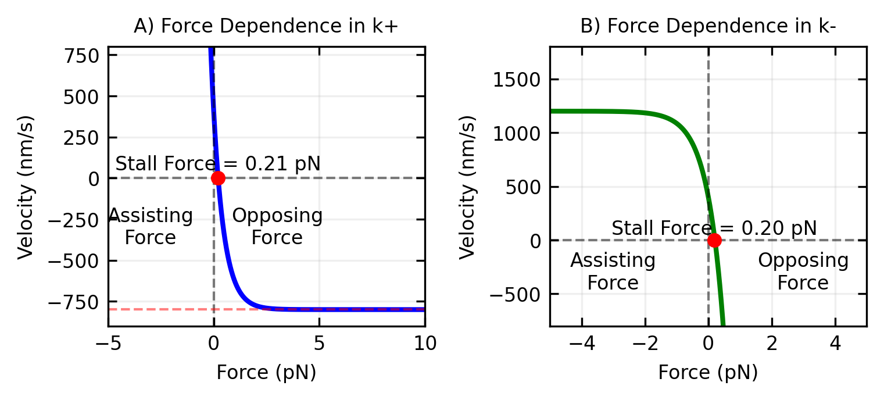
Biological Molecular Motors
Molecular motors are nanoscale machines that convert chemical energy into mechanical work in a thermally noisy environment. These systems present a fascinating physics problem: how can directed motion emerge from random thermal fluctuations? In this lecture, we will tackle the world of molecular motors, examining the physical constraints of the nanoscale environment, particularly thermal noise and low Reynolds number conditions. We will explore various mathematical models that describe motor behavior, focusing on one-state and two-state models to explain their mechanical properties. The lecture will investigate the Brownian ratchet mechanism that enables these nanomachines to achieve directional motion despite random thermal fluctuations. We’ll analyze the electrostatic interactions between motors and their tracks that create the physical basis for the ratchet effect. Finally, we’ll examine the key physics principles that allow these remarkable structures to convert chemical energy into mechanical work with exceptional efficiency in noisy environments.
Key Physics Principles
Molecular motors operate at the nanoscale where thermal energy (\(k_BT \approx 4\) pN\(\cdot\)nm at room temperature) is comparable to the energies involved in their operation. They face several fundamental challenges:
- Thermal Noise: Random Brownian motion tends to randomize any directed motion
- Low Reynolds Number: Viscous forces dominate over inertial forces
- Energy Conversion: Must efficiently convert chemical energy (\(\sim\) 20 \(k_BT\) per ATP) into mechanical work
Despite these challenges, molecular motors achieve remarkable efficiency (\(>\) 50%) and generate forces of 1-10 pN while moving at velocities of 0.1-10 \(\mu\)m/s.
Representative Motor Systems
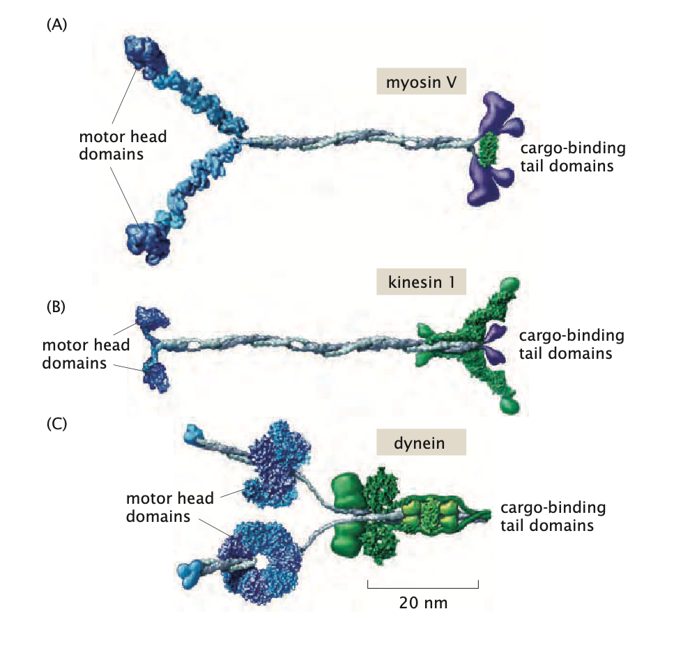
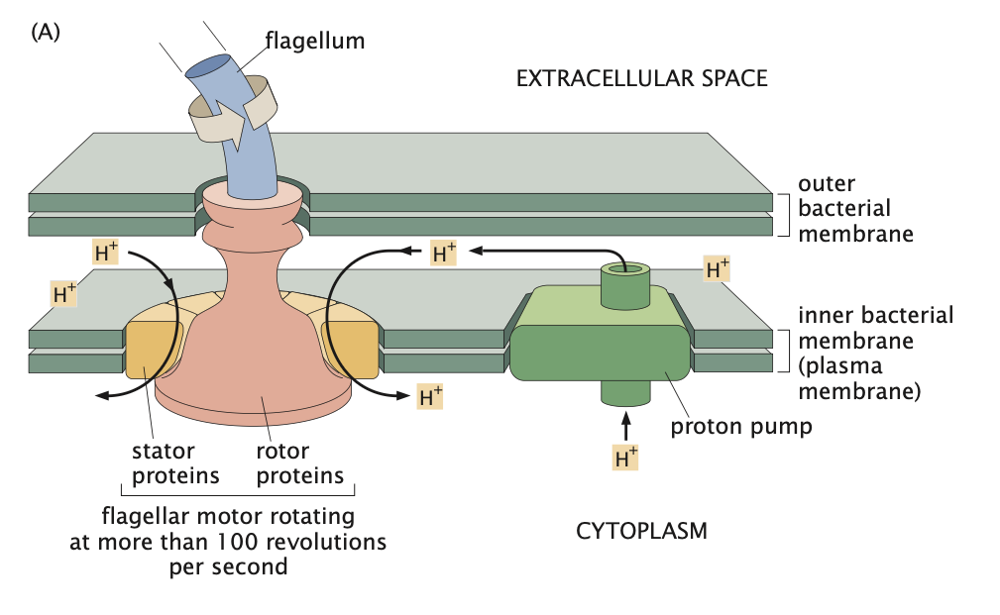
- Linear Motors (myosin, kinesin): Step along filamentous tracks with 8-nm steps
- Rotary Motors (ATP synthase, flagellar motor): Generate continuous rotational motion
- Polymerization Motors (actin, microtubule): Convert chemical energy of monomer addition/removal into mechanical work, pushing or pulling cellular structures
- Translocation Motors (helicases, viral packaging motors): Move along or transport nucleic acids or proteins through pores and across membranes
ATP Synthase: The Proton-Powered Molecular Motor
ATP synthase exemplifies a nanoscale rotary motor that transduces electrochemical potential energy into mechanical work and ultimately into chemical energy. The system operates based on fundamental principles of non-equilibrium thermodynamics.
Physical Basis: A proton electrochemical gradient \(\Delta\mu_{\text{H}^+}\) exists across the inner mitochondrial membrane, comprising both concentration and electrical components:
\[\Delta\mu_{\text{H}^+} = RT\ln\frac{[\text{H}^+]_{\text{out}}}{[\text{H}^+]_{\text{in}}} + F\Delta\Psi\]
where \(R\) is the gas constant, \(T\) is temperature, \(F\) is Faraday’s constant, and \(\Delta\Psi\) is the membrane potential.
Mechanical Structure: ATP synthase consists of two coupled rotary motors:
- \(\text{F}_0\) domain: A membrane-embedded proton-conducting rotor with a ring of \(c\)-subunits (\(n_c \approx 8\)-14, depending on species)
- \(\text{F}_1\) domain: A catalytic head with three-fold symmetry containing nucleotide binding sites on \(\beta\)-subunits, which are arranged in a hexameric ring (alternating with \(\alpha\)-subunits); the central \(\gamma\)-shaft extends from the \(\text{F}_0\) domain’s \(c\)-ring through the center of this hexameric structure, rotating within it to sequentially deform the \(\beta\)-subunits
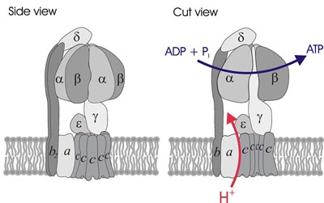
Mechanochemical Coupling:
- Protons flow through the \(\text{F}_0\) domain, following \(\Delta\mu_{\text{H}^+}\) and generating torque via electrostatic interactions
- This torque drives rotation of the central \(\gamma\)-shaft at angular velocities \(\omega \approx 100\) Hz
- The \(\gamma\)-shaft rotation sequentially deforms the three catalytic \(\beta\)-subunits, forcing them through three conformational states: loose (L), tight (T), and open (O)
- These mechanical state transitions catalyze the reaction: ADP + P\(_i\) → ATP + H\(_2\)O, \(\Delta G^{\circ'} \approx +30.5\) kJ/mol
Energetic Efficiency: The motor exhibits remarkable efficiency:
- Each \(360^{\circ}\) rotation synthesizes 3 ATP molecules
- Each \(c\)-subunit requires one proton translocation, meaning \(n_c\) protons per full rotation
- The efficiency \(\eta = \frac{\Delta G_{\text{ATP synthesis}}}{\Delta G_{\text{proton gradient}}} \approx 0.9\), approaching the theoretical maximum for reversible energy transduction
Physical Constraints and Design Principles
From a physics perspective, molecular motors must solve several fundamental problems:
Track-Based Motion
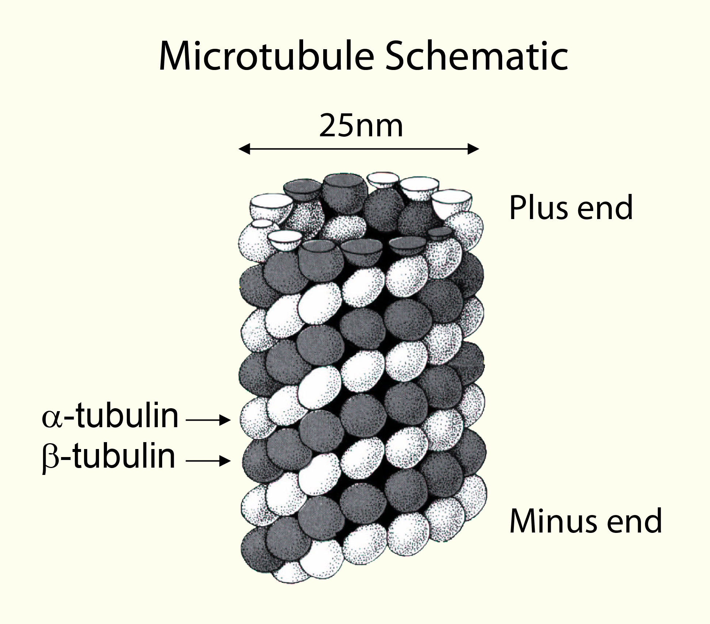
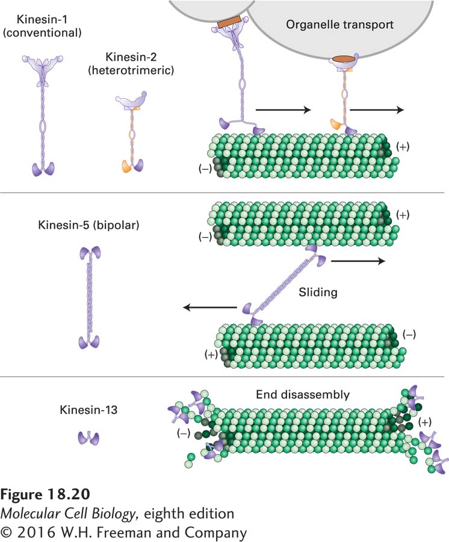
Motors require structured tracks (protein filaments) that provide:
- Spatial periodicity: Regular binding sites with spacing ~8 nm
- Structural asymmetry: Directional information encoded in the track structure
- Mechanical rigidity: Tracks must resist thermal bending over motor step distances
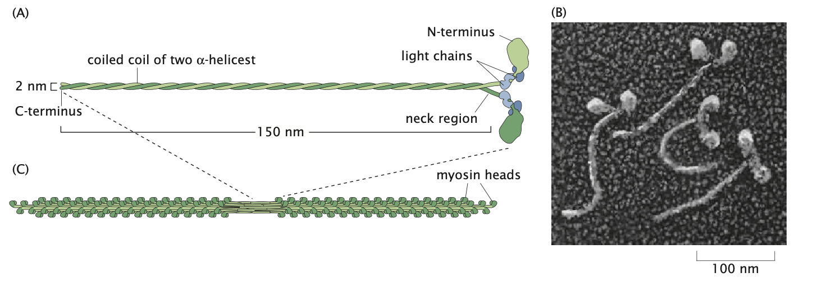
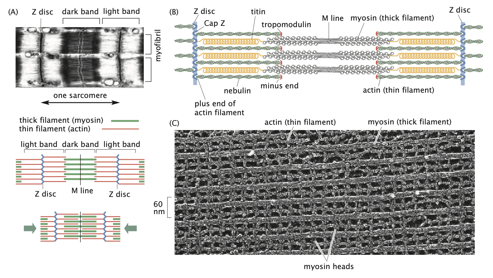
The actin-myosin system demonstrates how individual molecular forces (pN) can be amplified through parallel organization to generate macroscopic forces (N) in muscle tissue.
Energy Transduction Mechanism
The physics of energy conversion involves:
- Chemical energy input: ATP hydrolysis provides ~20 kT per molecule
- Mechanical output: Forces of 1-10 pN over distances of ~8 nm
- Coupling efficiency: >50% conversion efficiency despite thermal noise
Mechanochemical Coupling
Motors must couple chemical state changes to mechanical state changes. This requires:
- Multiple conformational states with different track affinities
- State-dependent interaction potentials
- Coordinated switching between states driven by ATP hydrolysis
This coupling allows motors to operate as “chemical ratchets” that can extract useful work from thermal fluctuations when driven by chemical energy.
Modeling Molecular Motors
The One-State Model
The simplest model for a molecular motor considers a motor that hops from one site to the next with forward rate \(k_+(F)\) and backward rate \(k_-(F)\) under the action of an applied force \(F\). This model assumes the motor has no internal states—a simplification that helps explore the position-state treatment, though it cannot be directly applied to real motors.
In this model, the probability per unit time of the motor moving forward by one site is \(k_+(F)\), while the probability per unit time of the motor moving backward by one site is \(k_-(F)\). The applied force \(F\) is assumed to be in the backward direction.
For mathematical simplicity, we allow the forward and backward rate constants to be different even when the applied force is zero, acknowledging that real motors must couple energy utilization (such as ATP hydrolysis) to mechanical conformational changes.
Master Equation Approach
The evolution of the probability distribution \(p(n,t)\) (probability of finding a motor at position \(n\) at time \(t\)) can be written as:
\[p(n, t + \Delta t) = k_+ \Delta t \cdot p(n-1, t) + k_- \Delta t \cdot p(n+1, t) + (1 - k_- \Delta t - k_+ \Delta t) \cdot p(n, t)\]
This master equation sums up the probabilities of all trajectories that lead to site \(n\) being occupied:
- First term: probability of jumping from the left site
- Second term: probability of jumping from the right site
- Third term: probability of staying put
Rearranging and dividing by \(\Delta t\):
\[\frac{p(n, t + \Delta t) - p(n, t)}{\Delta t} = k_+[p(n-1, t) - p(n, t)] + k_-[p(n+1, t) - p(n, t)]\]
Continuous Diffusion Equation
By treating the probability distribution as a continuous function of position \(x = na\) (where \(a\) is the step size), we can transform the discrete master equation into a continuous diffusion equation through Taylor expansion. Here’s how:
First, we define the continuous probability density \(p(x,t)\) corresponding to our discrete \(p(n,t)\). Then, we apply Taylor expansions to approximate the neighboring site probabilities:
\[p(n-1, t) = p(x-a, t) \approx p(x, t) - a\frac{\partial p}{\partial x} + \frac{a^2}{2}\frac{\partial^2 p}{\partial x^2} - \cdots\]
\[p(n+1, t) = p(x+a, t) \approx p(x, t) + a\frac{\partial p}{\partial x} + \frac{a^2}{2}\frac{\partial^2 p}{\partial x^2} + \cdots\]
Substituting these into our master equation:
\[\frac{\partial p}{\partial t} = k_+\left[\left(p - a\frac{\partial p}{\partial x} + \frac{a^2}{2}\frac{\partial^2 p}{\partial x^2}\right) - p\right] + k_-\left[\left(p + a\frac{\partial p}{\partial x} + \frac{a^2}{2}\frac{\partial^2 p}{\partial x^2}\right) - p\right]\]
Simplifying and collecting terms:
\[\frac{\partial p}{\partial t} = -a(k_+ - k_-)\frac{\partial p}{\partial x} + \frac{a^2}{2}(k_+ + k_-)\frac{\partial^2 p}{\partial x^2} + \text{(higher order terms)}\]
Defining \(V = a[k_+(F) - k_-(F)]\) as the average velocity and \(D = \frac{a^2}{2}[k_+(F) + k_-(F)]\) as the diffusion constant, and neglecting higher-order terms (valid for small step sizes), we obtain:
\[\frac{\partial p}{\partial t} = -V \frac{\partial p}{\partial x} + D \frac{\partial^2 p}{\partial x^2}\]
This is a driven or biased diffusion equation (also known as the Smoluchowski equation), which describes motors moving with an average velocity \(V\) while spreading out due to diffusion characterized by constant \(D\).
Solution to the Driven Diffusion Equation
Through a change of variables to a reference frame moving at the mean velocity:
- \(\bar{t} = t\)
- \(\bar{x} = x - Vt\)
The equation transforms into an ordinary diffusion equation:
\[\frac{\partial p}{\partial \bar{t}} = D \frac{\partial^2 p}{\partial \bar{x}^2}\]
For a motor initially localized at \(x = 0\), the solution is:
\[p(x, t) = \frac{1}{\sqrt{4\pi Dt}} e^{-(x-Vt)^2/4Dt}\]
This shows that the probability distribution broadens due to diffusion as it propagates with mean velocity \(V\). While this one-state model provides valuable insights, it cannot fully explain how real molecular motors achieve directional motion since real motors must have at least two states to couple energy utilization to mechanical work. Real motors must couple energy utilization (for example, ATP hydrolysis) to mechanical conformational changes, which requires at least two states.
Force Dependence of Transition Rates
While the one-state model cannot fully describe real molecular motors, introducing external forces into this simplified framework establishes a crucial mathematical foundation that extends to more realistic multi-state models. By understanding how force affects transition rates in this simpler case, we gain insights that remain valid in more complex scenarios.
In equilibrium, the ratio of forward and backward rates must satisfy a relation dictated by the characteristics of the energy landscape. For neighboring sites \(n\) and \(n+1\), the equilibrium condition (no net flux) can be written as:
\[k_+ p_n = k_- p_{n+1}\]
Equilibrium probabilities follow the Boltzmann distribution \(p_n = e^{-\beta G_n}/Z\), where \(G_n\) is the free energy of the motor at the \(n\)th site along the filament. This leads to the relation:
\[\frac{k_+}{k_-} = e^{-\beta \Delta G}\]
where \(\Delta G = G_{n+1} - G_n\) is the free energy change between adjacent sites.
When a force \(F\) is applied (with positive \(F\) representing an opposing force in the backward direction), the free energy at the \(n\)th site increases by the work done against this force, \(Fna\). This tilts the energy landscape, and the rate ratio becomes:
\[\frac{k_+(F)}{k_-(F)} = e^{-\beta(\Delta G + Fa)}\]
This fundamental relationship—how external force exponentially modifies transition rates—carries over directly to more sophisticated motor models with multiple states and complex chemomechanical cycles. In all these models, force affects the energy barriers between states according to similar principles.
More complex models will incorporate this force dependence into multiple transition rates connecting various chemical and mechanical states. The mathematical formalism established here provides the building blocks for those more realistic treatments, where ATP hydrolysis introduces additional energy terms into the rate equations.
Different assumptions about how force affects individual rates lead to different force-velocity relationships:
If all force dependence is in the forward rate: \[k_+(F) = k_+(0) e^{-\beta Fa}\] \[k_-(F) = k_-(0)\]
The mean velocity \(V = a[k_+(F) - k_-(F)]\) decreases exponentially with increasing opposing force (positive \(F\)) until reaching the stall force. As the opposing force increases further, the velocity approaches a lower bound of \(-k_-(0) \cdot a\).
If all force dependence is in the backward rate: \[k_+(F) = k_+(0)\] \[k_-(F) = k_-(0) e^{\beta Fa}\]
The mean velocity decreases exponentially with increasing opposing force (positive \(F\)), with no lower bound.
Experimental measurements using optical traps provide crucial evidence to determine whether force primarily affects the forward or backward rate. Single-molecule experiments can directly measure how velocity changes when forces are applied in different directions. For instance, when forward-pulling forces (negative forces) substantially increase motor velocity while backward forces (positive forces) cause a more gradual decrease, this asymmetric response suggests the forward rate is more force-sensitive. This pattern has been observed with myosin V, where applying assisting (negative) forces can increase stepping speed by nearly 10-fold compared to an equivalent magnitude of opposing (positive) force. Conversely, if backward forces dramatically reduce velocity while forward forces only modestly increase it, this indicates the backward rate is more force-sensitive, as seen in some kinesin measurements. These detailed force-velocity relationships serve as critical tests for validating theoretical models at all complexity levels, making this force-dependent framework essential even beyond the simple one-state description.
ATP Concentration Dependence in the One-State Model
While the one-state model fundamentally cannot explain how ATP hydrolysis drives directional motion, it can still illustrate how ATP concentration might affect motor behavior. ATP dependence can be introduced by making one of the rate constants proportional to ATP concentration:
\[k_+([ATP]) = k_{+,0} [ATP]\]
or
\[k_-([ATP]) = k_{-,0} [ATP]\]
These equations modify our earlier one-state model by making either the forward or backward transition rate directly proportional to ATP concentration. Here, \(k_{+,0}\) and \(k_{-,0}\) are rate constants that determine how strongly ATP concentration affects the transition rates.
If the forward rate depends on ATP concentration as shown in the first equation, the mean velocity from our one-state model becomes:
\[V([ATP]) = a[k_{+,0} [ATP] - k_-(F)]\]
This equation follows directly from our previous velocity expression \(V = a[k_+(F) - k_-(F)]\), where we’ve now made \(k_+\) dependent on ATP concentration. The step size \(a\) multiplies the difference between forward and backward rates to give the net velocity.
This simple model predicts a linear dependence of velocity on ATP concentration, which differs from the saturation behavior observed experimentally. This discrepancy highlights another limitation of the one-state model—real molecular motors show Michaelis-Menten-like saturation kinetics, indicating that ATP binding and release involve multiple steps that cannot be captured by a single transition rate.
For real molecular motors, free energy released during ATP hydrolysis drives directional motion when no external force is applied. This chemical energy is converted into mechanical work through conformational changes in the motor protein. When a motor takes a step without external force, it utilizes approximately 20-25 \(k_B T\) of free energy from ATP hydrolysis.
To incorporate ATP concentration dependence into the one-state model in a more realistic way, we could modify the forward rate constant \(k_+\) to be a function of ATP concentration, following a Michaelis-Menten type relationship:
\[k_+(\text{[ATP]}) = k_+^{\max} \times \frac{\text{[ATP]}}{K_M + \text{[ATP]}}\]
This equation better captures the physical reality that the ATP binding site on the motor can become saturated at high ATP concentrations. Here, \(k_+^{\max}\) represents the maximum possible forward rate when ATP is not limiting, and \(K_M\) is the Michaelis constant—the ATP concentration at which the forward rate reaches half its maximum value. Unlike the linear model, this relationship correctly predicts that motor velocity will plateau as ATP concentration increases, matching experimental observations of motor behavior.
Michaelis-Menten Kinetics
The Michaelis-Menten relationship describes how the rate of an enzyme-catalyzed reaction varies with substrate concentration. It arises from a simple two-step mechanism:
First, the enzyme (E) and substrate (S) reversibly form an enzyme-substrate complex (ES): \(E + S \rightleftharpoons ES\) (with rate constants \(k_1\) and \(k_{-1}\))
Then, the complex irreversibly converts to product (P) and free enzyme: \(ES \rightarrow E + P\) (with rate constant \(k_2\))
We can derive this mathematically by writing the rate equations for each species:
\[\frac{d[E]}{dt} = -k_1[E][S] + k_{-1}[ES] + k_2[ES]\] \[\frac{d[S]}{dt} = -k_1[E][S] + k_{-1}[ES]\] \[\frac{d[ES]}{dt} = k_1[E][S] - k_{-1}[ES] - k_2[ES]\] \[\frac{d[P]}{dt} = k_2[ES]\]
The reaction velocity \(v\) equals the rate of product formation: \(v = \frac{d[P]}{dt} = k_2[ES]\)
Under the steady-state approximation, we assume that \(\frac{d[ES]}{dt} = 0\), meaning the concentration of the enzyme-substrate complex doesn’t change appreciably:
\[k_1[E][S] - k_{-1}[ES] - k_2[ES] = 0\] \[k_1[E][S] = (k_{-1} + k_2)[ES]\] \[[ES] = \frac{k_1[E][S]}{k_{-1} + k_2}\]
We also know that the total enzyme concentration is conserved: \([E]_{total} = [E] + [ES]\), so: \[[E] = [E]_{total} - [ES]\]
Substituting this into our equation for [ES]: \[[ES] = \frac{k_1([E]_{total} - [ES])[S]}{k_{-1} + k_2}\]
Solving for [ES]: \[[ES] + \frac{k_1[ES][S]}{k_{-1} + k_2} = \frac{k_1[E]_{total}[S]}{k_{-1} + k_2}\] \[[ES]\left(1 + \frac{k_1[S]}{k_{-1} + k_2}\right) = \frac{k_1[E]_{total}[S]}{k_{-1} + k_2}\] \[[ES] = \frac{k_1[E]_{total}[S]}{(k_{-1} + k_2) + k_1[S]} = \frac{[E]_{total}[S]}{(k_{-1} + k_2)/k_1 + [S]}\]
Defining \(K_M = \frac{k_{-1} + k_2}{k_1}\), we get: \[[ES] = \frac{[E]_{total}[S]}{K_M + [S]}\]
The reaction velocity is then: \[v = k_2[ES] = \frac{k_2[E]_{total}[S]}{K_M + [S]}\]
Defining \(V_{max} = k_2[E]_{total}\), we arrive at the Michaelis-Menten equation: \[v = \frac{V_{max}[S]}{K_M + [S]}\]
This equation has two important limits:
- When \([S] \ll K_M\): \(v \approx \frac{V_{max}[S]}{K_M}\), giving a linear relationship with substrate concentration
- When \([S] \gg K_M\): \(v \approx V_{max}\), representing saturation of the enzyme
For molecular motors, ATP is the substrate, and the motor protein acts as the enzyme. At low ATP concentrations, the rate increases linearly with [ATP]. At high concentrations, the rate plateaus as all motor binding sites become saturated with ATP. This is, however, only observed assuming at least the two-state model.
The Two-State Model
The most immediate generalization of the one-state model is to consider motors with two internal states at each position. Unlike the one-state model, where we had to make the nonphysical assumption that forward and backward rates were different despite identical internal states, the two-state model provides a physically realistic framework.
In real molecular motors, the key processes—ATP binding, hydrolysis, stepping, and release—are coupled cycles that generate directed movement. The two-state model can represent these processes through transitions that may or may not involve physical displacement along the filament.
Mathematical Framework
For a two-state motor, we track the probability \(p_i(n,t)\) of finding the motor in internal state \(i\) (0 or 1) at position \(n\) at time \(t\). The rate equations are:
\[\frac{dp_0(n, t)}{dt} = k^+_A p_1(n-1, t) + k^-_B p_1(n, t) - k^-_A p_0(n, t) - k^+_B p_0(n, t)\]
\[\frac{dp_1(n, t)}{dt} = k^-_A p_0(n+1, t) + k^+_B p_0(n, t) - k^+_A p_1(n, t) - k^-_B p_1(n, t)\]
Where:
- \(k^+_A\): Rate for transition from state 1 to 0 with forward step
- \(k^-_A\): Rate for transition from state 0 to 1 with backward step
- \(k^+_B\): Rate for transition from state 0 to 1 without displacement
- \(k^-_B\): Rate for transition from state 1 to 0 without displacement
Motor Velocity
By considering the steady-state occupancy probabilities of the two states, the average velocity of the motor can be calculated as:
\[\langle V \rangle = a \frac{k^+_A k^+_B - k^-_A k^-_B}{k^-_A + k^-_B + k^+_A + k^+_B}\]
Where \(a\) is the step size. Remarkably, this expression only includes the step size \(a\) for transitions that involve actual movement along the track. Any small positional shifts that might occur during internal state changes at the same binding site (transitions governed by \(k^+_B\) and \(k^-_B\)) don’t appear explicitly in this velocity formula, though these transition rates still influence the overall motor speed.
ATP Concentration Dependence in the Two-State Model
The two-state model naturally incorporates ATP concentration dependence by making specific transition rates proportional to ATP concentration. For example, if ATP binding is required for the transition from state 0 to state 1, then:
\[k^+_B([ATP]) = k^+_{B,0} [ATP]\]
This leads to velocity dependence that saturates at high ATP concentrations:
\[\langle V \rangle = \frac{V_{max} [ATP]}{K_m + [ATP]}\]
where \(V_{max}\) and \(K_m\) depend on the individual rate constants. This Michaelis-Menten-like behavior arises naturally because the motor must wait for ATP binding before proceeding through its cycle, creating the observed saturation when ATP is abundant.
Response to ATP and Force
The two-state model is much more adept at explaining experimental data than the one-state model:
ATP Dependence: For kinesin and other motors, velocity increases with ATP concentration, approaching saturation at high concentrations—similar to Michaelis-Menten enzyme kinetics. In the two-state model, ATP binding can be explicitly modeled as a transition between states.
Force Dependence: Applied forces affect not only the maximum velocity but also the apparent binding constant for ATP. The two-state model captures this coupling between mechanical force and chemical kinetics.
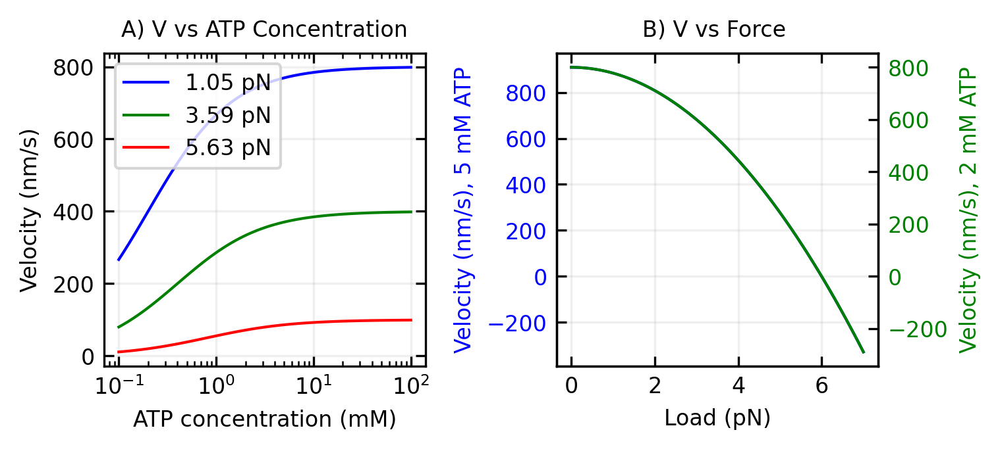
The two-state model provides the minimal framework needed to understand how molecular motors convert chemical energy into directional motion. By coupling ATP hydrolysis to conformational changes between states, this model captures the essential features of real molecular motors, including their response to varying ATP concentrations and applied forces.
While the two-state model captures many features of real molecular motors, understanding the physical mechanism that allows these motors to rectify random thermal motion requires further insight. This brings us to the concept of the Brownian ratchet. The two-state model can generate directed motion even without an external force due to the asymmetry in the transition rates between states, coupled with the different potential landscapes. This mechanochemical coupling is what enables molecular motors to convert the free energy of ATP hydrolysis into directional mechanical work, even against moderate opposing forces.
The Brownian Ratchet Model
The Brownian ratchet model provides an intuitive framework for understanding how molecular motors can rectify random thermal fluctuations to produce directed motion. This model serves as a physical implementation that bridges the mathematical descriptions in the one-state and two-state models described above.
The one-state model introduced the concept of biased diffusion but lacked a physical mechanism to explain the origin of different forward and backward rates. The two-state model improved upon this by incorporating internal states, but still didn’t fully explain the physical basis for directional motion. The Brownian ratchet model addresses this gap by providing a concrete physical mechanism.
In essence, the Brownian ratchet model shows how the two-state switching (similar to that in the two-state model) creates an asymmetric potential landscape that can rectify random thermal fluctuations. While the two-state model mathematically describes transitions between states with different rates, the Brownian ratchet explains why these transitions result in directional motion: the switching between potentials (states) breaks time-reversal symmetry and creates a directional bias.
The key insight is that a simple mechanical ratchet cannot extract useful work from thermal fluctuations at equilibrium (which would violate the second law of thermodynamics). However, molecular motors operate away from equilibrium by consuming chemical energy (through ATP hydrolysis), which allows them to achieve directed motion by biasing these thermal fluctuations. This non-equilibrium driving force provides the physical basis for the different transition rates we incorporated mathematically in the previous models.
The Flashing Ratchet
The flashing ratchet provides a concrete mechanism for how molecular motors can achieve directional motion through thermal fluctuations. In this model, the motor alternates between two states:
- An “on” state with an asymmetric sawtooth potential \(V(x)\) that has a steeper slope in one direction than the other
- An “off” state with a flat potential (\(V(x) = 0\))
Let’s mathematically define our asymmetric triangular potential with period \(L\). If we denote by \(a\) the position of the maximum within each period (with \(0 < a < L\)), we can write:
\[V(x) = \begin{cases} \frac{V_0}{a}x & \text{for } 0 \leq x < a \\ \frac{V_0}{L-a}(L-x) & \text{for } a \leq x < L \end{cases}\]
where \(V_0\) is the height of the potential. The asymmetry is characterized by the parameter \(a\), with \(a < L/2\) creating a potential with a gentler slope toward the right.
Code
import numpy as np
import matplotlib.pyplot as plt
# Define the asymmetric sawtooth potential
def sawtooth_potential(x, L=1.0, V0=1.0, a=0.2*1.0):
"""
Asymmetric sawtooth potential with period L, height V0, and maximum at position a
"""
result = np.zeros_like(x)
for i in range(len(x)):
x_mod = x[i] % L
if x_mod < a:
result[i] = V0 * x_mod / a
else:
result[i] = V0 * (L - x_mod) / (L - a)
return result
# Parameters
L = 1.0 # Period length
V0 = 1.0 # Potential height
a = 0.2*L # Position of maximum (asymmetry parameter)
# Create x values and calculate potential
x = np.linspace(0, 2*L, 1000)
V = sawtooth_potential(x, L, V0, a)
# Create the plot
plt.figure(figsize=get_size(12, 6))
plt.plot(x, V, 'k-', linewidth=2)
# Add annotations
plt.axhline(y=0, color='gray', linestyle='--', alpha=0.5)
plt.axvline(x=a, color='red', linestyle='--', alpha=0.5)
plt.axvline(x=L+a, color='red', linestyle='--', alpha=0.5)
plt.axvline(x=2*L+a, color='red', linestyle='--', alpha=0.5)
# Add slope annotations
plt.annotate('steep slope', xy=(0.1, 0.5*V0), xytext=(0.1, 0.2*V0),
arrowprops=dict(arrowstyle='->'), fontsize=10)
plt.annotate('gentle slope', xy=(L-0.3, 0.31*V0), xytext=(L-0.4, 0.7*V0),
arrowprops=dict(arrowstyle='->'), fontsize=10)
# Add period and asymmetry annotations
plt.annotate('period L', xy=(0.5*L, -0.1*V0), xytext=(0.5*L, -0.15*V0),
ha='center', fontsize=10)
plt.annotate('', xy=(0, -0.05*V0), xytext=(L, -0.05*V0),
arrowprops=dict(arrowstyle='<->'))
# Add a point at the maximum
plt.plot(a, V0, 'ro', markersize=6)
plt.annotate('a', xy=(a, V0), xytext=(a-0.05, 1.1*V0), fontsize=10)
plt.annotate('V₀', xy=(a, V0), xytext=(a+0.05, 1.1*V0), fontsize=10)
plt.xlabel('position (x)')
plt.ylabel('potential V(x)')
plt.ylim(-0.2*V0, 1.3*V0)
plt.show()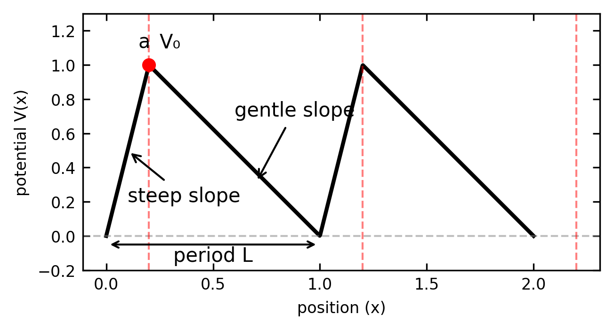
To derive the average velocity of a particle in this flashing ratchet, we need to analyze the dynamics during each phase of the cycle. This can be approached both through direct probability calculations and by solving the Fokker-Planck equation that governs the evolution of probability distributions.
In the “on” state, the particle quickly relaxes to the nearest minimum of the potential. In the “off” state, the particle undergoes free diffusion, with the probability distribution evolving according to:
\[p(x,t) = \frac{1}{\sqrt{4\pi Dt}}e^{-\frac{(x-x_0)^2}{4Dt}}\]
where \(D\) is the diffusion coefficient and \(x_0\) is the starting position.
Fokker-Planck Approach
The dynamics of our particle can be more formally described using the Fokker-Planck equation, which governs the time evolution of the probability density function \(p(x,t)\):
\[\frac{\partial p(x,t)}{\partial t} = -\frac{\partial}{\partial x}\left[F(x)p(x,t)\right] + D\frac{\partial^2 p(x,t)}{\partial x^2}\]
Where \(F(x) = -\frac{\partial V(x)}{\partial x}\) is the force derived from the potential \(V(x)\).
To solve this equation for our asymmetric sawtooth potential, we need to consider the “on” and “off” phases separately:
Solving for the “On” Phase
During the “on” phase, the Fokker-Planck equation becomes:
\[\frac{\partial p(x,t)}{\partial t} = \frac{\partial}{\partial x}\left[\frac{\partial V(x)}{\partial x}p(x,t)\right] + D\frac{\partial^2 p(x,t)}{\partial x^2}\]
For our asymmetric sawtooth potential, the force term is piecewise constant:
\[\frac{\partial V(x)}{\partial x} = \begin{cases} \frac{V_0}{a} & \text{for } 0 \leq x < a \\ -\frac{V_0}{L-a} & \text{for } a \leq x < L \end{cases}\]
This piecewise nature allows us to solve the equation separately in each region and match the solutions at the boundaries. For steady-state solutions (when \(\frac{\partial p(x,t)}{\partial t} = 0\)), we can integrate the equation once to get:
\[\frac{\partial V(x)}{\partial x}p(x) + D\frac{\partial p(x)}{\partial x} = J\]
Where \(J\) is the probability current density, which represents the net flow of probability at each point. In a non-equilibrium system like our ratchet, \(J\) can be non-zero, indicating directed transport.
If we consider a confined system with periodic boundary conditions and no external driving force during the “on” phase, we have \(J=0\), leading to:
\[D\frac{\partial p(x)}{\partial x} = -\frac{\partial V(x)}{\partial x}p(x)\]
This first-order differential equation can be solved by separation of variables:
\[\frac{dp}{p} = -\frac{1}{D}\frac{\partial V}{\partial x}dx\]
Integrating both sides:
\[\ln p(x) = -\frac{V(x)}{D} + C\]
Where \(C\) is an integration constant. Taking the exponential of both sides:
\[p(x) = A e^{-V(x)/D}\]
Where \(A=e^C\) is determined by normalization. This gives us the Boltzmann distribution:
\[p(x) = \frac{1}{Z}e^{-V(x)/D}\]
Where \(Z = \int_0^L e^{-V(x)/D}dx\) is the partition function that normalizes the probability.
For our specific sawtooth potential, we can compute this explicitly:
\[Z = \int_0^a e^{-\frac{V_0 x}{aD}}dx + \int_a^L e^{-\frac{V_0(L-x)}{(L-a)D}}dx\]
These integrals can be evaluated to give:
\[Z = \frac{aD}{V_0}(1-e^{-V_0/D}) + \frac{(L-a)D}{V_0}(1-e^{-V_0/D})\]
This gives us the complete steady-state solution for the “on” phase. However, for the complete ratchet effect, we need to consider the non-zero current density that arises from the cycling between “on” and “off” states. The current density during the “on” phase itself can be calculated from the steady-state distribution and the potential:
\[J(x) = -\frac{\partial V(x)}{\partial x}p(x) - D\frac{\partial p(x)}{\partial x}\]
During the “on” phase relaxation, particles quickly settle toward potential minima, creating transient probability currents that depend on the initial distribution from the preceding “off” phase. When combined with the diffusive spreading during the “off” phase, this creates the net directed transport characteristic of the flashing ratchet mechanism.
Solving for the “Off” Phase
During the “off” phase, the potential is zero, and the Fokker-Planck equation simplifies to the diffusion equation:
\[\frac{\partial p(x,t)}{\partial t} = D\frac{\partial^2 p(x,t)}{\partial x^2}\]
This equation can be solved using standard methods, such as Fourier transforms or the fundamental solution approach. For an initial condition \(p(x,0) = g(x)\), the solution is given by:
\[p(x,t) = \int_{-\infty}^{\infty} \frac{1}{\sqrt{4\pi Dt}}e^{-\frac{(x-y)^2}{4Dt}} g(y) dy\]
This is a convolution of the initial distribution with the fundamental solution (Green’s function) of the diffusion equation:
\[G(x,t;y,0) = \frac{1}{\sqrt{4\pi Dt}}e^{-\frac{(x-y)^2}{4Dt}}\]
For our flashing ratchet, the initial condition \(g(x)\) for each “off” phase is the steady-state solution from the preceding “on” phase.
Key Physics Parameters and Optimization
The ratchet efficiency depends on three key parameters that illustrate important physics principles:
Spatial Asymmetry: Optimal performance occurs when the potential has strong asymmetry (steep slope in one direction, gentle in the other). This maximizes the directional bias while still allowing thermal activation over barriers.
Timing Optimization: The critical physics insight is that the diffusion time must match the spatial scale: \[\sqrt{D\tau_{\text{off}}} \sim L\]
This condition ensures particles diffuse approximately one period length during each cycle, optimizing the directional bias. This is a fundamental result connecting diffusion physics to motor performance.
Temperature Dependence: The ratchet velocity depends exponentially on temperature through the Boltzmann factor \(e^{-\Delta V/k_BT}\), showing the competition between thermal activation and potential barriers.
For optimal parameters, the average velocity is approximately: \[\langle v \rangle \approx \frac{L}{2(\tau_{\text{on}} + \tau_{\text{off}})}\left(1 - e^{-\Delta V/k_BT}\right)\]
Physics Significance: This result demonstrates how thermal energy can be harnessed for directed motion when the system operates away from equilibrium - a key principle in non-equilibrium statistical mechanics.
Molecular Mechanism of the Ratchet Effect
The flashing ratchet model provides an elegant abstraction, but how is this mechanism physically implemented in molecular motors? The key lies in the coupling between chemical reactions, conformational changes, and electrostatic interactions with the filament.
Chemical Reactions as the Basis for Potential Switching
In real molecular motors, the “flashing” of the potential is achieved through chemical reactions, particularly ATP hydrolysis. This chemical cycle creates the non-equilibrium conditions necessary for the ratchet to function.
The typical mechanochemical cycle involves:
ATP Binding: When ATP binds to the motor domain, it causes a conformational change that alters the interaction potential between the motor and the filament (actin or microtubule).
Hydrolysis: ATP is hydrolyzed to ADP + Pi, releasing energy (~20 kT) that drives the motor into a different conformational state.
Phosphate Release: The release of Pi often represents a key step where the motor’s interaction with the filament changes dramatically.
ADP Release: The final step that resets the motor for the next cycle.
Electrostatic Interactions with Filaments
The physical basis of the ratchet mechanism lies in the electrostatic interactions between the motor protein and the periodic structure of cytoskeletal filaments. Microtubules, for example, are composed of α- and β-tubulin dimers arranged in a helical lattice. Each tubulin monomer possesses an intrinsic dipole moment due to the asymmetric distribution of charged amino acid residues.
Dipole-Based Asymmetric Potential
The tubulin dimers create a spatially periodic but asymmetric electrostatic potential along the microtubule surface. Each tubulin dimer consists of α- and β-tubulin subunits, both of which have distinct charge distributions. The C-terminal tails of both subunits are predominantly negatively charged due to an abundance of glutamate and aspartate residues, while the main bodies of the tubulin monomers contain both positive and negative patches. Importantly, α-tubulin has a greater net negative charge than β-tubulin, with approximately 12 more negative charges at physiological pH. This charge asymmetry can be modeled as a dipole moment aligned along the long axis of each dimer:
\[V_{\text{MT}}(x) = \sum_{n} \frac{\vec{p}_n \cdot \hat{r}_n}{4\pi\epsilon_0\epsilon_r r_n^2}\]
where \(\vec{p}_n\) is the dipole moment of the \(n\)-th tubulin dimer (typically 1500-2000 Debye units), \(\hat{r}_n\) is the unit vector from the dipole to the motor, and \(r_n\) is the distance. The outer surface of microtubules presents a pattern of alternating positive and negative patches, with the negative regions predominantly at the interfaces between dimers. This creates a “sawtooth-like” potential with steeper slopes in one direction, serving as the foundation for directional bias.
Motor State-Dependent Interactions
The motor protein’s interaction with this potential depends critically on its nucleotide state. Crucially, these state changes don’t just shift the potential up or down—they change the relative strengths of interactions with different sites on the microtubule.
Why Potential Shape Changes Rather Than Just Shifts
The key physics insight is that different charge states create different spatial patterns of electrostatic interaction:
ATP-bound state: The motor domain contains a positively charged nucleotide-binding pocket that preferentially interacts with β-tubulin’s negative patches. This creates deeper potential wells at β-tubulin sites.
ADP+Pi state: The additional negative charges from the phosphate group change the motor’s overall charge distribution, now favoring interaction with α-tubulin’s positive regions. This inverts the relative well depths.
ADP state: Loss of the phosphate creates yet another charge pattern, with intermediate binding preferences.
Nucleotide-free state: The binding pocket becomes more neutral, reducing the overall interaction strength and flattening the potential landscape.
Physical Mechanism: Each nucleotide state presents a different multipole moment to the microtubule surface. Since the microtubule has a periodic but asymmetric charge pattern, different motor charge states will have different optimal binding positions. This creates the essential ingredient for the ratchet: the motor’s “favorite” binding sites change during the chemical cycle, biasing its random walk in one direction.
ADP+Pi state: After ATP hydrolysis, the negative phosphate groups (Pi with -3e charge) remain bound in the pocket, creating a more negative local environment. Conformational changes expose different charged amino acid residues, particularly in the switch I and II regions. The microtubule-binding interface retains some positive charge (~+1 to +2e) but with altered distribution.
ADP-bound state: Following Pi release, the charge distribution shifts significantly. The loss of -3e phosphate charge changes the electrostatic profile of the motor domain. In kinesins, this state often exhibits weaker microtubule binding due to reduced positive charge at the binding interface (approximately neutral or +1e).
Nucleotide-free state: Without any nucleotide, the binding pocket exposes positively charged residues that were previously coordinating with phosphate groups. The motor domain typically has a strong positive charge at the microtubule-binding interface (+3 to +5e), facilitating tight binding to the negative patches on tubulin.
The total electrostatic interaction potential becomes more detailed when considering the specific interactions between individual charged residues, rather than the simplified dipole representation:
\[V_{\text{elec}}(x, \text{state}) = \sum_{i,j} \frac{q_i(\text{state}) q_j^{\text{MT}}(x)}{4\pi\epsilon_0\epsilon_r |x_i - x_j|}\]
where \(q_i(\text{state})\) represents the state-dependent charges on the motor domain at positions \(x_i\), and \(q_j^{\text{MT}}(x)\) represents the charges at positions \(x_j\) on the microtubule. This point-charge model provides a more precise representation of local interactions than the dipole approximation, capturing how specific charged amino acids interact across the motor-microtubule interface. For kinesin, the switch from ATP-bound to ADP-bound states alters charges primarily in the nucleotide-binding pocket (residues 85-90), the switch II region (residues 230-240), and the neck linker interface (residues 320-330). These charge redistributions effectively implement the flashing ratchet mechanism by modifying the motor’s interaction with the underlying asymmetric microtubule potential.
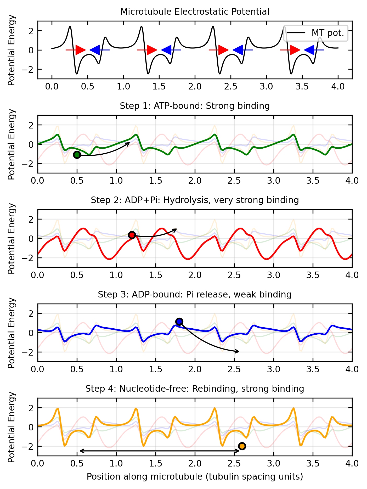
The electrostatic ratchet mechanism works as follows:
Asymmetric Substrate: The microtubule provides an inherently asymmetric electrostatic landscape due to the different dipole moments of α- and β-tubulin subunits.
Charge-Dependent Potential Shape Changes: Each step in the ATP hydrolysis cycle creates different charge distributions on the motor domain. Crucially, these don’t just shift the potential up or down—they change the relative depths of different binding sites and the heights of barriers between them.
Rectified Motion: The combination of thermal fluctuations and periodic potential shape changes (not just shifts) biases the motor’s random walk. The motor preferentially moves to sites that become more favorable in its current charge state, creating net directional movement.
This mechanism explains how molecular motors can achieve high efficiency (~50-60%) by using electrostatic interactions to harvest thermal energy, rather than trying to fight against thermal fluctuations.
How Chemical Energy Creates Asymmetry
The crucial aspect that enables directional motion is how chemical energy is used to create asymmetry in the system:
Charge Distribution Changes: ATP hydrolysis alters the charge distribution on the motor domain by exposing or concealing charged amino acid residues.
Binding Site Affinities: The chemical state of the motor affects its affinity for specific binding sites on the filament.
Conformational Biases: The energy released during hydrolysis biases the motor toward certain conformations that promote forward movement.
Each of these filament proteins (actin, microtubules) has a periodic arrangement of charged residues that creates a spatially periodic potential along the filament. The motor protein’s chemical state determines how it interacts with this periodic potential, effectively implementing the flashing ratchet mechanism.
The Powerstroke and Brownian Ratchet Mechanisms
Overall, molecular motors likely employ a combination of two fundamental mechanisms:
Powerstroke Mechanism: The motor undergoes a conformational change that directly applies force, similar to the motion of a lever arm. This occurs when the release of phosphate triggers a large conformational change that directly pushes the motor forward.
Brownian Ratchet Mechanism: The motor uses chemical energy to rectify random thermal fluctuations through potential switching. Rather than directly pushing, this mechanism works by biasing the probability of random movements.
The relative contribution of these mechanisms varies among different motor types and remains an active area of research. For example, myosin V appears to use primarily a powerstroke mechanism, while kinesin may rely more heavily on the Brownian ratchet.
A general model for motor velocity could be expressed as:
\[v_{\text{total}} = \alpha v_{\text{powerstroke}} + (1-\alpha) v_{\text{ratchet}}\]
where \(\alpha\) represents the relative contribution of the powerstroke mechanism. The actual value of \(\alpha\) can vary from 0 (pure Brownian ratchet) to 1 (pure powerstroke).
Interestingly, experimental evidence suggests that most biological molecular motors employ a hybrid of these mechanisms, using chemical energy both to create conformational changes (powerstroke) and to bias thermal fluctuations (ratchet), making them remarkably efficient even in noisy cellular environments.
Summary
Molecular motors represent a remarkable example of how physical principles can be harnessed to create efficient nanoscale machines. The key physics insights from our analysis reveal several fundamental challenges that these biological machines have overcome. Molecular motors operate in an environment where thermal energy (kT) is comparable to interaction energies, yet they achieve greater than 50% efficiency, demonstrating remarkable thermal noise management. They create directional bias through symmetry breaking, where asymmetric potentials combined with temporal switching creates rectification of random motion. Their non-equilibrium operation, driven by chemical energy input, allows violation of detailed balance, enabling them to perform work against equilibrium forces. Additionally, these motors exhibit scale-appropriate design, with force generation in the piconewton range and step sizes in nanometers, perfectly matched to the thermal energy scale of their environment.
Our mathematical framework has progressed through increasingly realistic models that capture the physics of molecular motors. We began with the one-state model, which demonstrates biased diffusion but cannot adequately explain energy coupling mechanisms. This led to the two-state model, which introduces the minimal complexity needed for chemomechanical coupling between ATP hydrolysis and mechanical movement. Finally, the ratchet model provides an intuitive mechanism for thermal energy rectification, explaining how random fluctuations can be harnessed to produce directed motion. This progression illustrates the increasing physical realism needed to capture the behavior of biological motors.
The molecular motor mechanism demonstrates several universal physics principles that extend beyond biological systems. These include Kramers’ rate theory for barrier crossing in noisy environments, non-equilibrium thermodynamics that allows directed motion from random fluctuations, electrostatic energy serving as the basis for switchable interaction potentials, and optimization principles that balance multiple competing timescales. These concepts form the foundation for understanding how motors can operate efficiently despite thermal noise.
These principles extend well beyond biology into various fields of physics and engineering. They inform the development of artificial molecular machines (recognized by the 2016 Nobel Prize in Chemistry), advance our understanding of active matter physics and non-equilibrium statistical mechanics, guide nanoscale engineering efforts where thermal noise cannot be ignored, and provide insights into information processing at the physical limits of computation. The remarkable efficiency of biological motors (~50-60%) provides both inspiration and benchmarks for physics-based engineering at the nanoscale, demonstrating how nature has solved fundamental physics challenges that we continue to struggle with in human-made devices.
Additional Reading
- Phillips, R., Kondev, J., Theriot, J., & Garcia, H. G. (2012). Physical Biology of the Cell. Garland Science.
- Jülicher, F., Ajdari, A., & Prost, J. (1997). Modeling molecular motors. Reviews of Modern Physics, 69(4), 1269.
- Astumian, R. D., & Hänggi, P. (2002). Brownian motors. Physics Today, 55(11), 33-39.
- Howard, J. (2001). Mechanics of Motor Proteins and the Cytoskeleton. Sinauer Associates.
Topics in Biological Physics
This lecture focused on the physics of molecular motors, but there are many related areas in biological physics that build on these concepts and extend their application to broader cellular phenomena. Cytoskeletal dynamics and cell motility represent one of the most direct applications, where the motor proteins we studied drive not just individual cargo transport but coordinate to generate the forces necessary for entire cells to migrate, divide, and change shape. The physics of force generation, load dependence, and collective behavior that we explored in single motor models scales up to explain how cells can generate the substantial forces needed to crawl through tissues or reorganize their internal architecture.
The field of motor proteins and active transport extends beyond the kinesin and dynein examples we focused on, encompassing a vast cellular logistics network where different motor families with distinct mechanical properties are matched to specific cargo types and transport requirements. Understanding how cells coordinate these transport systems requires the same thermodynamic and kinetic principles we covered, but applied to complex networks where multiple motor types interact with branched cytoskeletal networks under varying load conditions.
Membrane activity and shape changes introduce additional complexity where motor proteins not only move along cytoskeletal tracks but also interact with and deform cellular membranes. The physics of membrane curvature, combined with motor-generated forces, leads to phenomena like endocytosis, exocytosis, and organelle shaping that require understanding both the motor mechanics we studied and the elastic properties of lipid bilayers. Similarly, nuclear organization involves motor proteins working within the confined geometry of the nucleus to position chromosomes, organize nuclear bodies, and facilitate processes like DNA repair and transcription, where the physics of motors operating in crowded, confined spaces becomes crucial.
Finally, in vitro reconstitution experiments provide the controlled laboratory environments where the theoretical models we developed can be directly tested and refined. These experiments allow researchers to isolate specific components of cellular motor systems and measure the fundamental physical parameters that appear in our equations, validating the physics principles while revealing new phenomena that emerge from the complex interactions between motors, filaments, and regulatory proteins in living cells.